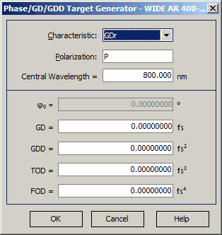

Phase/GD/GDD Target Generator
Phase/GD/GDD Target Generator
Navigation: OptiLayer Menu Commands > Data Menu > Target Editor >
Phase/GD/GDD Target Generator
` <target_generator.html>`__ ` <target_editor.html>`__ ` <target_peaks.html>`__

Phase/GD/GDD Target Generator dialog is used for quick computations of Phase, Group Delay (GD), and Group Delay Dispersion (GDD) wavelength dependencies based on initial values commonly used by specialists in ultra-fast optics. In the upper part of the dialog, specify the Characteristic, Polarization for the target value, and the corresponding Central Wavelength. In the lower part of the dialog, you can specify the initial phase value (only for phase targets), GD value (only for phase and GD targets), GDD, Third Order Dispersion (TOD), and Fourth Order Dispersion (FOD) values at the Central Wavelength. Upon pressing the OK button, target characteristics will be evaluated based on the following formulas (where ω0 is the frequency corresponding to the Central Wavelength):
For Phase Targets (φr, φt): φ(ω) = φ0 - GD (ω-ω0) - 1/2 GDD (ω-ω0)2 - 1/6 TOD (ω-ω0)3 - 1/24 FOD (ω-ω0)4
For GD Target (GDr, GDt): GD(ω) = GD + GDD (ω-ω0) + 1/2 TOD (ω-ω0)2 + 1/6 FOD (ω-ω0)3
For GDD Target (GDDr, GDDt): GDD(ω) = GDD + TOD (ω-ω0) + 1/2 FOD (ω-ω0)2
The resulting target values will be displayed on the current page of the Target Editor for further analysis and adjustments as needed.